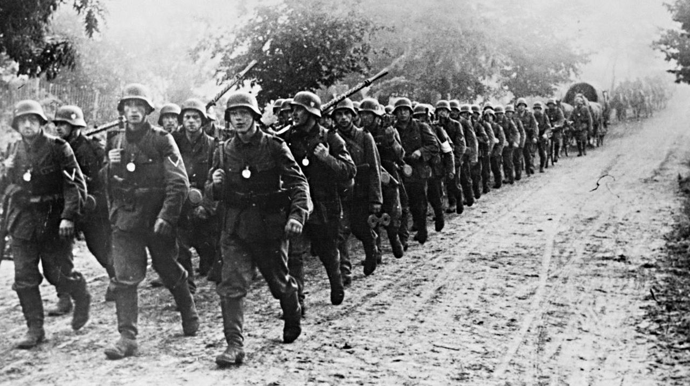

Úvod do Druhé světové války
Druhá světová válka byla globální konflikt, který trval od 1. září 1939, kdy Německo napadlo Polsko, až do 2. září 1945, kdy Japonsko oficiálně kapitulovalo. Tento rozsáhlý konflikt zahrnoval většinu států světa a stal se největším a nejničivějším válečným střetem v dějinách lidstva. Válka byla vybojována mezi dvěma hlavními aliancemi, známými jako Spojenci a státy Osy, přičemž jejich ideologické a strategické rozdíly měly zásadní dopad na průběh války i její následky. Konflikt zasáhl téměř všechny kontinenty, včetně Evropy, Asie, Afriky a Pacifiku, a byl veden na souši, na moři i ve vzduchu.
Tento válečný střet si vyžádal desítky milionů lidských životů, včetně civilního obyvatelstva, apřinesl nepředstavitelnou míru destrukce. Dopady války se odrazily nejen ve změně politického amocenského uspořádání světa, ale také v posunu mezinárodního práva, vzniku nových organizacíjako OSN a ve vývoji technologií, včetně atomových zbraní. Druhá světová válka tak zanechalahluboké stopy na geopolitickém, ekonomickém i kulturním poli a formovala moderní svět v podobě,jak jej známe dnes.
